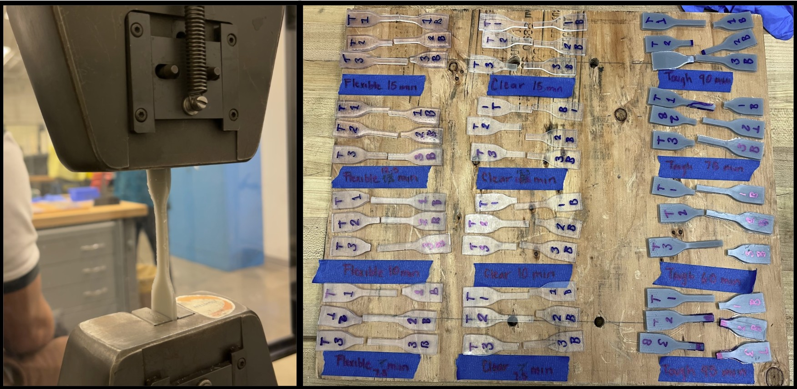
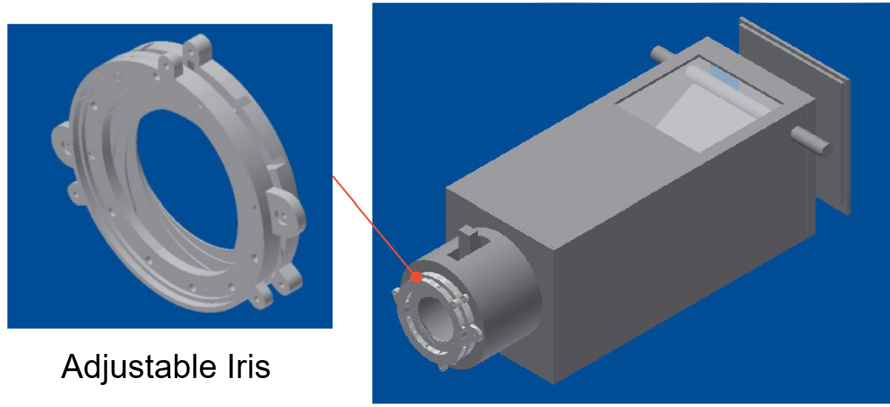
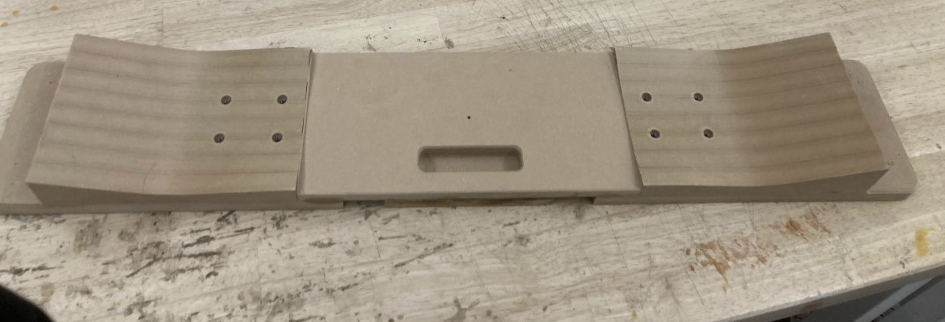
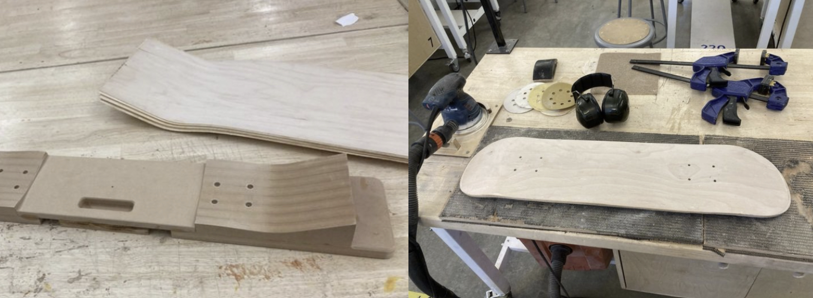
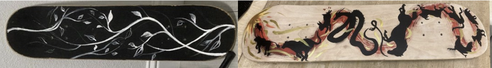
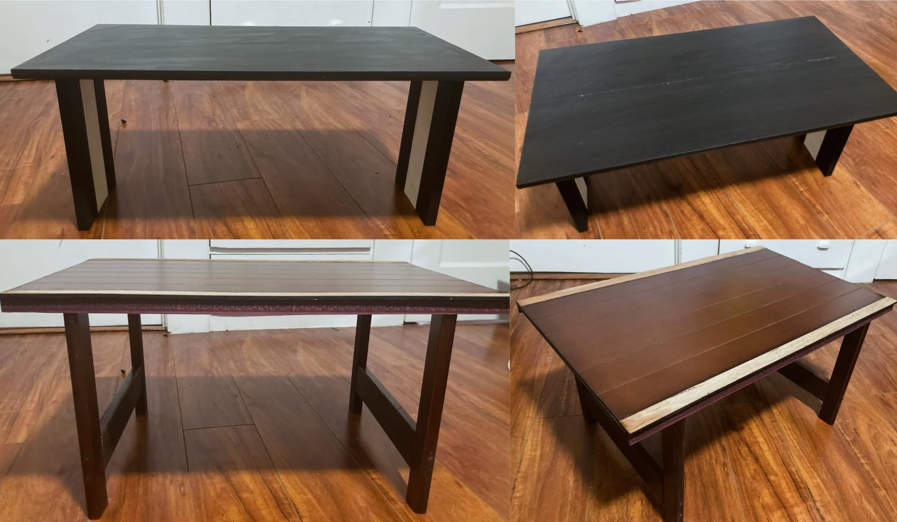
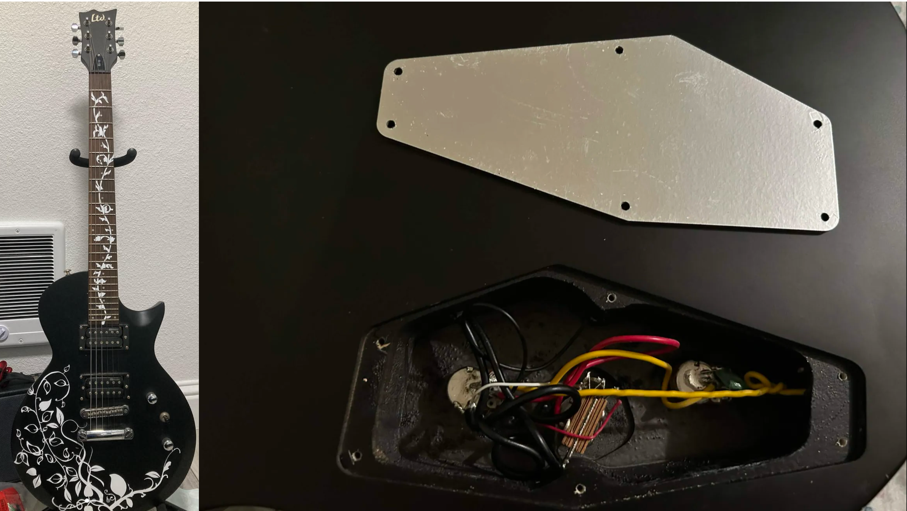
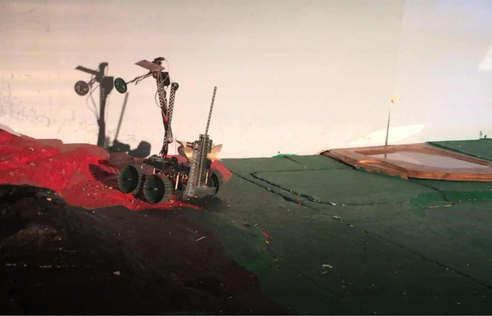
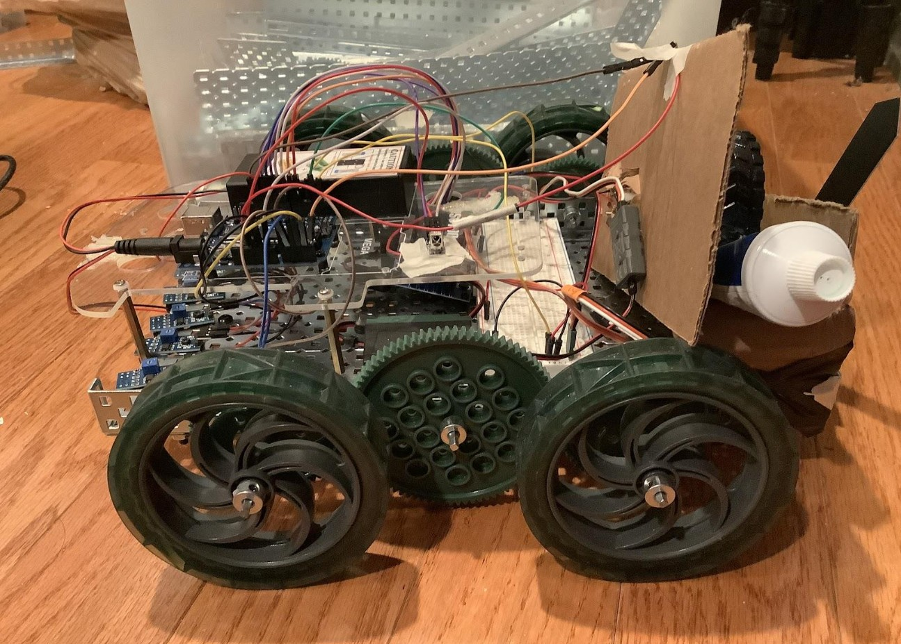

Investigated how cure time affects the mechanical properties of SLA (stereolithography) 3D-printed resins, testing Tough 1500, Flexible 80A, and Clear V5 at 75%, 100%, 125%, and 150% of the manufacturer's recommended cure durations. Designed and printed ASTM Type IV dogbone specimens, ran Instron tensile testing across all material and cure-time combinations, and used linear regression and ANOVA to determine whether cure time had a statistically significant effect on elastic modulus, ultimate tensile stress, strain at fracture, and toughness.

Most mechanical properties were statistically insensitive to cure time across the tested range, suggesting the resins' polymer networks stabilize early in curing. A few exceptions emerged: Clear V5's elastic modulus, and Flexible 80A's ultimate tensile stress and toughness, increased significantly with longer cure times, while Tough 1500's toughness decreased. Even so, specimens cured at the manufacturer-recommended duration consistently showed the least variance, reinforcing recommended cure times as the standard for repeatable results.
Click here for full project report
Materials testing • Tensile/mechanical testing (Instron) • DOE & experimental design • Statistical analysis (linear regression, ANOVA) • Python data analysis • Additive manufacturing (SLA)
Measured the focal length of a given lens (49 cm) and designed a large-format film camera body around it in Autodesk Inventor, then built it out of pine. The lens sat in a sliding inner cylinder for focusing, paired with a 3D-printed adjustable iris, a mirror-and-viewfinder system for previewing shots, a sliding cardboard shutter, and a removable "cookie jar" style back panel for loading film.

Biggest lessons: the lens's long focal length drove a bigger camera build than planned, and light leakage was the recurring challenge, ultimately traced to seams that cleaner cutting and better team coordination would have avoided.
Optics & lens characterization • CAD (Autodesk Inventor) • 3D printing • Woodworking/fabrication • Mechanism design (adjustable iris, sliding lens mount, shutter) • Experimental validation
CNC milled MDF mold:

I vacuum-bagged maple veneer layers onto the mold with clamps and heavy objects outside the bag to help compress the layers together (the vacuum was struggling to fully compress all layers while glue was drying). I laser cut a template for the board, then demolded, applied the grip tape, drilled truck holes (using guides from the mold), and cut + sanded the skateboard into shape.

I then sanded, painted, and varnished the surfaces.

I designed and made various tools around Jacobs Hall as student staff. I helped make a tool board by tracing and scanning outlines of tools, and CNC routing plywood boards that the tools would sit in for makerspace users to easily access. I also made an exacto knide blade dispenser and a waterjet safety guard.
My apartment didn't have a living room, and I loved to have friends and cook for them. Having them sit on my floor for meals was quite sad. I made a few tables with the following requirements: they had to be small and lightweight so I can store them away when not being used, are structurally sound, look aesthetic, made from scrap wood from Jacobs, and can double as a stool.

I made some flat pack bar stools for my apartment in Sophomore year out of 1/2" plywood that was lasercut on the Shopbot CNC Router. I no longer have the CAD files or any photos :(
I made a cat tree from scrap wood and fabric tying around the Jacobs makerspace. I designed it to be structural, have nautral exposed wood for scratching, have covered seating areas, and be easy to assemble and disassemble. I also designed a sifting litter box out of two basic litter boxes for pine litter. Pine litter (or wood stove pellets) turn into sawdust when esposed to water (or urine). I attached a smaller, top litter box with slots drilled into it to two four bar linkages attached to a servo motor. It ideally would have sifted the sawdust into the lower litter box whenevr I pressed a button. Unfortunately, it did not work very well as the shaking proved ineffective for getting all of the sawdust out.
I unfortunately do not have photos of either project as my cat did not like the cat tree and I ultimately gave it away. My cat grew too big for the litter box, so I no longer have that as well and do not have photos.
After I accidentally washed my iphone in the laundry, I repaired it using an older iPhone SE I had lying around, which only had 64GB of storage (not enough stoage for much beyond the OS operating system). I replaced components such as the screen, battery, and home button on the water-damaged phone with parts pulled from the 64GB device. This was extremeley chaallenging to work around Apple's part-pairing restrictions to get the mismatched components to be accepted by the device.
I'd done iPhone and iPad part replacements before, but Apple hard-codes restrictions on many components so they're tied to the specific device they came with. The home button was the trickiest case: on the iPhone SE, it's actually a solid-state Touch ID sensor that's paired to the logic board at the factory, so swapping in a donor button normally kills fingerprint unlock entirely. I took apart both home buttons and frankensteined the internals together into one unit to get the water-damaged phone's logic board to accept it and restore basic home-button/click function (though Touch ID stayed disabled).
I got an electric guitar for dirt cheap because its electronics were broken and the electronics box lid was missing. I diagnosed and replaced the faulty components, soldering them back into the circuit, then laser cut a new aluminum backing plate for the missing lid. Finished it off by designing, cutting, weeding, and applying custom vinyl designs across the body.

Modeled an agent's dynamics in a simplified, custom-built version of DoodleJump and used Model Predictive Control (MPC) to drive it toward two distinct objectives: climbing as fast as possible, and climbing while conserving energy and staying stable. Both controllers shared the same underlying dynamics and constraints, differing only in their cost function weights, showing that reweighting a single MPC formulation is enough to produce qualitatively different, game-strategy-like behavior.
Across both modes, the controllers reached the target height in 90% of trials, with most failures traced to wind disturbances too strong to recover from or target platforms that fell outside the agent's reachable constraints. The results matched the intended behavior of each mode and point to MPC as a promising, underused tool for modeling optimal play strategies, including speedrunning, in video games.
Click for Final Paper
Watch Project Video
Click for Final Presentation
Model Predictive Control • Optimization & cost function design • Dynamical systems modeling • Python simulation • Statistical analysis (trial-based comparison, confidence intervals) • Technical writing
Built a connected safety system using an ESP32, a thermocouple on the stovetop, and a PIR motion sensor, communicating over MQTT to flag when a stove is left on unattended. If the user's phone leaves a GPS range, or no motion is detected in the room for 15 minutes, the system pushes a phone notification through IFTTT; if the user is still detected at home, a speaker in our lab kit also sounds a warning tone. Alert frequency and urgency scale with the stovetop's measured temperature, and the user can snooze or dismiss alerts from their phone.
We used a host computer to offload server duties from the ESP32, and ran multiple threads on it to listen to the phone client and microcontroller client simultaneously, which improved response time. At larger scale, a multi-client server could replace the host computer entirely.
We originally planned to use an IR thermometer instead of a thermocouple, so the sensor could be mounted above the stovetop without interfering with cooking, and a gas sensor for redundant detection. Both were dropped after I2C compatibility issues, since the ESP32 doesn't support the repeated start protocol many of these sensors relied on, so we moved to a directly-mounted thermocouple instead.
Embedded systems (ESP32) • IoT protocols (MQTT, IFTTT) • Sensor integration (thermocouple, PIR) • Multithreaded client-server design • Cloud/API integration (Adafruit IO) • Hardware troubleshooting & design iteration
Designed a motorized, wheel-driven attachment for skis that lets recreational skiers, resort staff, and first responders climb slopes independently of ski lifts. Our team used a weighted AHP/Pugh analysis to select a concept, then iterated from CAD sketches through a scavenged-parts physical prototype to a final 3D-printable design with a geared drivetrain.
Click for Full Project Presentation
Design process (AHP, Pugh analysis) • CAD (Solidworks, Fusion360) • Embedded systems • Motor/drivetrain sizing
Built a rover to complete five simulated Mars missions: locating the sun, measuring wind speed, measuring temperature, detecting salinity, and drilling for hydrocarbons. Each mission required its own sensor or mechanism, from a sun-finding rotation routine to a vertical drilling assembly and a pulley-driven crane for planting a flag and deploying a salinity sensor.

The vertical drill was one of the toughest mechanisms to get right but performed well: guide rails converted circular motion into linear motion to raise and lower a second motor, which spun the drill bit to cut a hole and collect samples. The crane and flag mechanism was also a strong success, a pulley system raised and lowered the arm to position a flag, with a motor-driven bearing at the end pushing the flag into place; the same crane arm carried the salinity sensor.
A few missions fell short. We never collected usable temperature data, so we couldn't determine the volcano's heat level, and we had no way to actually collect angle data for the sun-finding mission, so that one didn't come together either. The anemometer was the biggest struggle: a hole in one of the cups and undersized cups meant it couldn't catch enough wind to spin properly, so we added paper-and-tape cones as a fix, which threw off the balance and made it spin too fast to get useful readings. In hindsight, we should have 3D printed the anemometer in separate parts and assembled it afterward, which would have let us use bigger cups without shortening the arms, and we should have collected and validated anemometer data earlier so we could confirm turn rate actually corresponded to the right wind speed before relying on it.
Mechanism design (crank-slider, pulley systems) • Sensor calibration & linear regression • Robotics & motor control
Built during the COVID-19 pandemic with no tools (or resources for tools) at home, working entirely off a robotics kit borrowed from school for the semester. The robot follows a pre-set path along a black line on the ground, using markings to know when to turn left or right, then stops to lower an arm, check soil moisture, and squeeze a water container if the reading is too low.

A few issues surfaced that I didn't have time to fully resolve before returning the kit at the end of the school year. The watering mechanism, a wheel pressing on a toothpaste tube, had limited water capacity and would occasionally overwater the soil when the moisture sensor read below 5%, which better tuning or a redesigned mechanism could fix; a hose with a solenoid valve or Bluetooth-controlled motor, or a system that let the robot draw water from a source directly, would also solve the capacity problem. The robot also occasionally drifted off its path, which added tracking checkpoints could correct.
Robotics & sensor integration • Mechanism design
Email: jennifersili@berkeley.edu
LinkedIn: linkedin.com/in/jennifersili